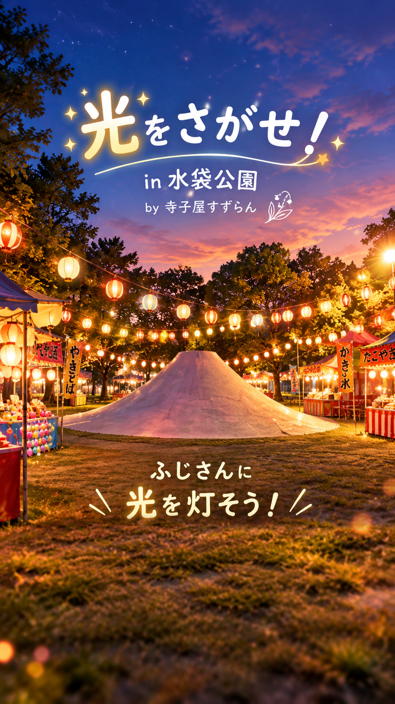
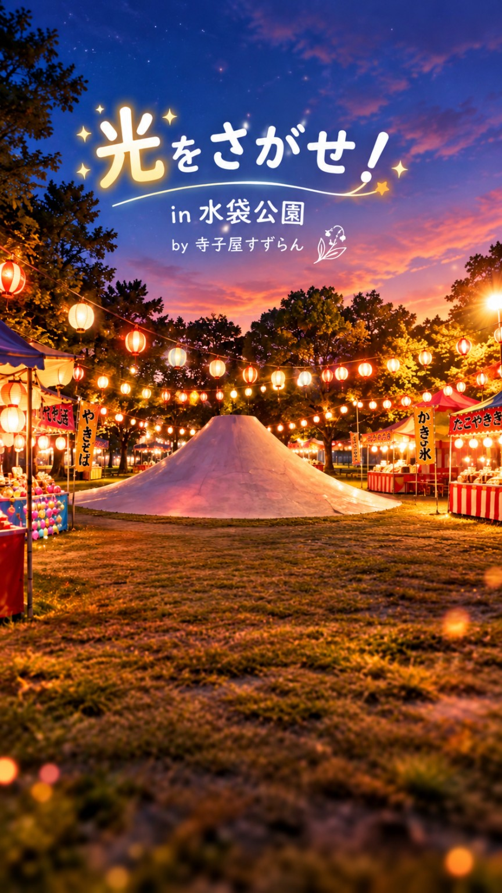

光のQRをよみとろう！
本番では光のQRコードを
しかくの中に合わせてね ✨
これは読み取り画面のデモです。
受付スクリーン・ほかのスマホとは連動しません。
✨ 光をみつけた！ ✨
あかの光
※ 赤のゲームは単体デモとして遊べます。
受付スクリーンのカウント・提灯とはまだ連動しません。
✨ あそびかた ✨
水袋公園で、4つの光をさがす
ぼうけんに出かけよう！
受付のQRでスタート！
スマホで読み取ったら、ぼうけんのはじまり！
4色の光をさがそう！
公園を探検しよう。こまったら「ヒント帳」を見てね。
光のQRをよみとろう！
見つけた光のQRを読むと、ミニゲームにちょうせんできるよ！
クリアで提灯がともる！
ミニゲームをクリアすると、寺子屋すずらんの受付スクリーンに提灯がひとつ灯るよ🏮
もっと楽しもう！
光を見つけたら、次の子にヒントを残せるよ。正解は書かないでね。
気に入った屋台やブースを、みんなに教えよう。買わなくてもOK！
※ これは公開確認版です。実際のQR読取・本番ゲーム・
他の端末への共有・受付の提灯連動はまだありません。
🌿 歩きながらスマホを見ないでね。
あぶないところには入らず、楽しく探検しよう！
次の冒険者へ
ヒントをのこそう！ ✨
見つけた光の場所について、
ヒントを考えてみよう！
🔑 こたえをそのまま書かないでね！
場所をずばり教えないでね。
自分やほかの人の名前も書かないでね。
※ これは画面確認版。ほかの人には送信されません。
ヒントをのこしたよ！
次の冒険者のためのヒント、
ありがとう！ 💫
※ このヒントは今のスマホ内だけのテスト記録です。
📖 みんなのヒント帳
光をさがすときの参考にしてね。
場所を教えすぎないヒントが集まるよ。
※ 確認版では、今のスマホで入力したヒントだけを表示します。ほかの参加者とはまだ共有されません。
▤ おすすめのお店
スタンプとひとことを見て、
お店やブースをまわってみよう！
※ 画面確認版：このスマホで入力したおすすめだけを表示します。ほかの人には共有されません。
♡ おすすめをのこそう！
気に入ったお店やブースを、
次の冒険者へ教えてあげよう！
自分やほかの人の名前など、個人情報は書かないでね。
※ 今は確認版です。おすすめはこのスマホ内だけに保存されます。ほかの参加者には公開されません。
✨ みんなのおすすめ
※ あなたのスマホだけにあるテスト投稿です。